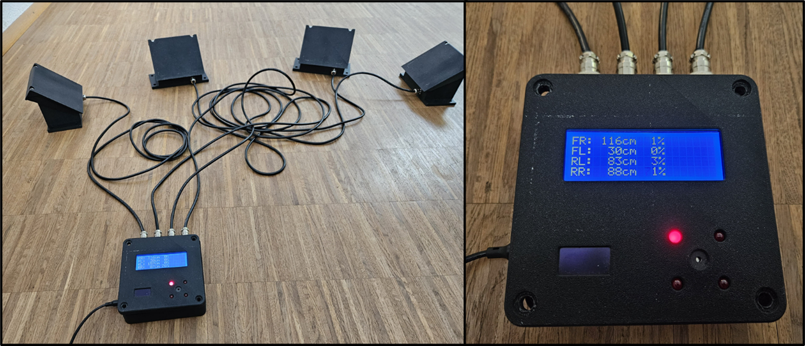

The Current MVP
Our current MVP has been validated against the project requirements. It is fast, reliable, and modular for quick retrofit on ground service vehicles. The goal is safer and more efficient docking—even with a reduced crew—without revealing internal design details.

The Current Ground Handling Procedure
Example shown: a catering truck docking to an aircraft at Frankfurt Airport. Today this is a manual, crew-intensive process that depends on visual checks and clear communication.
This approach works but can be slow, manpower-heavy, and sensitive to noise, weather, and visibility.
How Steer-Clear Improves This
With Steer-Clear, the driver receives clear, real-time guidance directly in the cab. This reduces or removes the need for a flag or a dedicated flagman and enables faster, safer docking, potentially with a one-person crew—while keeping internal implementation details confidential.
Next Steps
We’re preparing in-field testing on operational vehicles to validate performance under real conditions. In parallel, the next prototype is already in development to build on the MVP learnings and further improve robustness, usability, and integration.